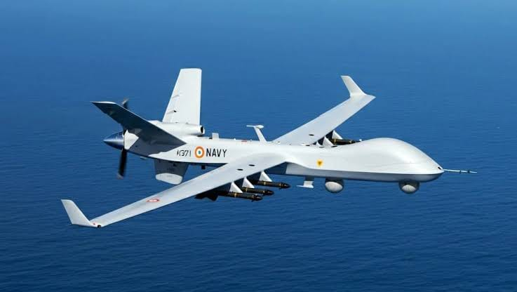

Indian maritime UAV · visual reference
PREDICTIVE REAL-TIME ANALYTICS & TWIN
Intelligence for the engine. Confidence for the mission.
A Digital Twin platform for aero piston engines that transforms live telemetry into health awareness, anomaly intelligence and predictive maintenance insight.
01
ENGINE HEALTH INTELLIGENCE
Digital Twin · Real-Time Telemetry · Predictive Analytics